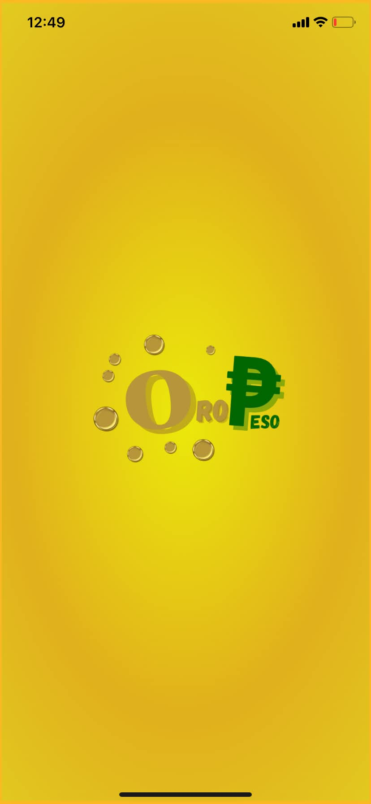
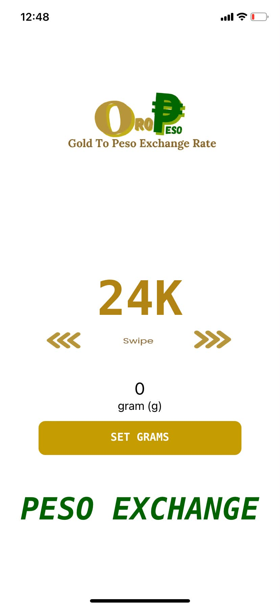
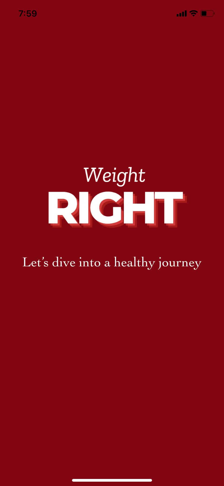
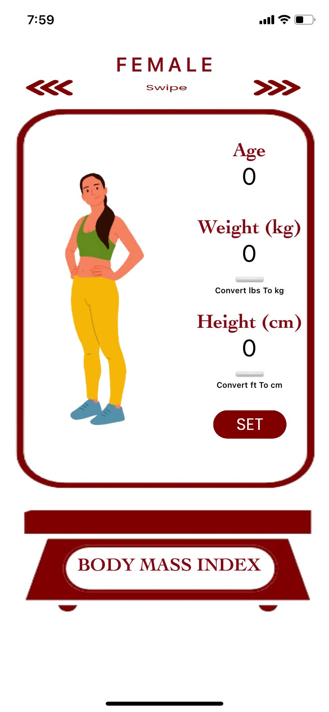
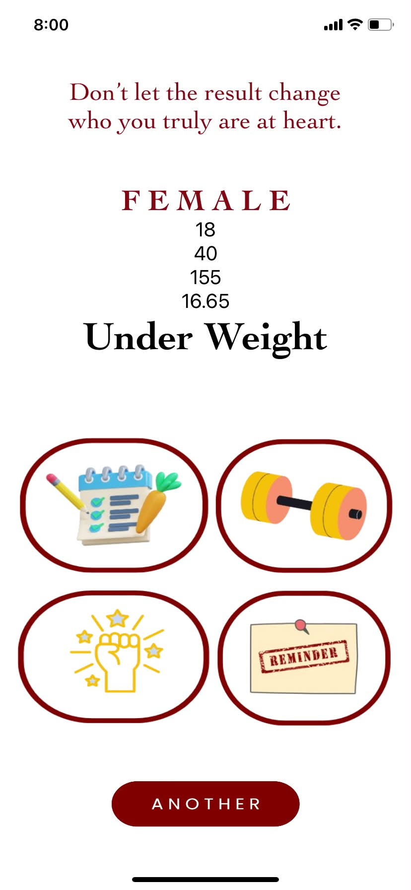
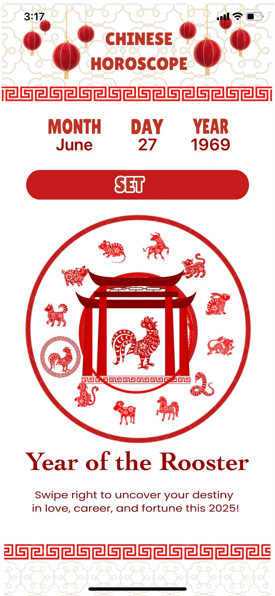
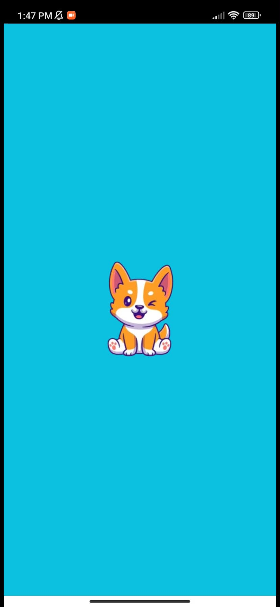

Overview
These mobile applications demonstrate Android interface design, app navigation, event-driven programming, APK building, and practical feature implementation for mobile-based academic projects.
Case Study
A collection of academic mobile application projects developed with Android Studio APK development and MIT App Inventor, using Java-based logic, mobile UI workflows, and interactive app features.
These mobile applications demonstrate Android interface design, app navigation, event-driven programming, APK building, and practical feature implementation for mobile-based academic projects.
Responsible for mobile UI implementation, Java-based app logic, screen navigation, feature testing, APK generation, and building interactive workflows using Android Studio and MIT App Inventor.
Mobile screens, navigation flows, interactive buttons, forms, app logic, APK builds, prototype testing, and user-friendly Android interfaces.
Java, Android Studio, APK development, MIT App Inventor, mobile UI components, OOP concepts, Git, and VS Code.


OroPeso


Weight Right
Chinese Horoscope
Phrase Pop